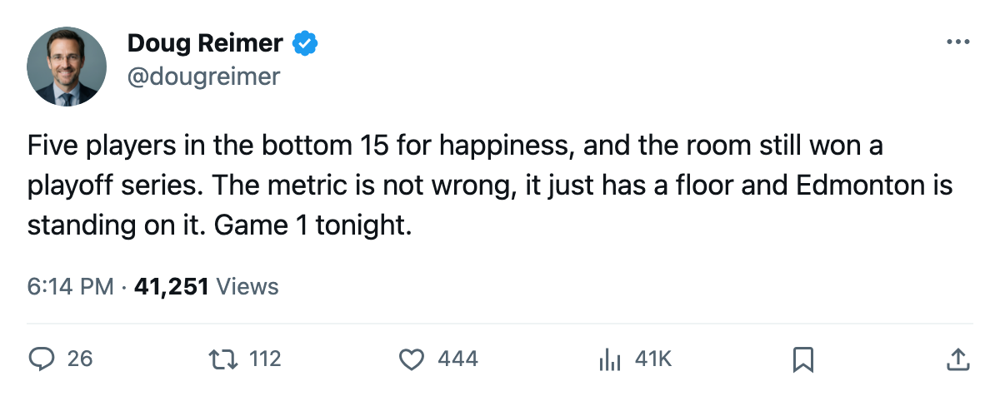
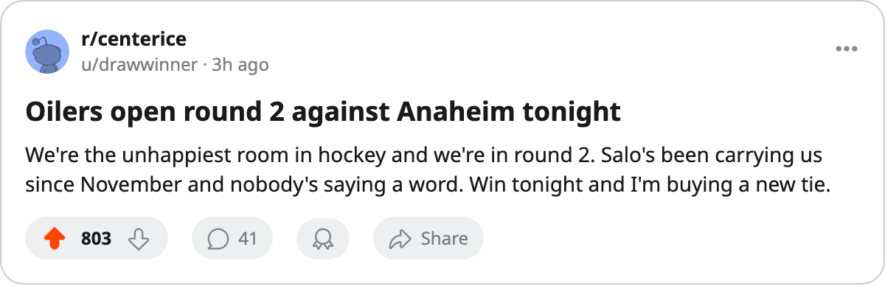

9 of the 10 Unhappiest Clubs Are Home. The 10th Opens Round 2 Tonight.
Edmonton enters Game 1 against Anaheim with the lowest club morale in the league. The other 9 clubs that round out the bottom 10 are all watching from the couch.
 Doug ReimerAnalytics editor, ex-video coach · The Slot Report
Doug ReimerAnalytics editor, ex-video coach · The Slot Report
Edmonton carries the lowest club morale average in the league: 86.3, dead last of 30. They open a Round 2 series tonight at home against Anaheim, a club with 91.4 (13th lowest of 30). The other 8 clubs that occupy the bottom 10 are either eliminated or never made the field.
The March piece on this metric found that 5 playoff clubs had under 20% happy players while 3 already-eliminated clubs had over 70%. The inversion has only widened since. Four of the bottom-10 morale clubs reached the postseason, three with home ice, and one is still alive.
The bottom 10, and what became of each
| Rank (1 = lowest morale) | Club | Morale avg | Points | Fate |
|---|---|---|---|---|
| 1 |  Edmonton Oilers Edmonton Oilers | 86.3 | 98 | Round 2, alive |
| 2 |  Atlanta Thrashers Atlanta Thrashers | 86.6 | 84 | Eliminated Round 1 by TOR 4-1 |
| 3 |  Nashville Predators Nashville Predators | 87.4 | 101 | Eliminated Round 1 by ANA 4-2 |
| 4 |  Boston Bruins Boston Bruins | 88.2 | 97 | Eliminated Round 1 by TB 4-2 |
| 5 |  New York Rangers New York Rangers | 88.2 | 84 | 10th East, no playoffs |
| 6 |  Ottawa Senators Ottawa Senators | 88.4 | 77 | 13th East, no playoffs |
| 7 |  Columbus Blue Jackets Columbus Blue Jackets | 88.9 | 81 | 10th West, no playoffs |
| 8 |  New York Islanders New York Islanders | 89.9 | 84 | 9th East, no playoffs |
| 9 |  Calgary Flames Calgary Flames | 90.3 | 70 | 15th West, no playoffs |
| 10 |  Buffalo Sabres Buffalo Sabres | 90.9 | 84 | 11th East, no playoffs |
Edmonton's win over Vancouver in 6 is the only postseason victory a bottom-10-morale club has registered. ATL, NSH, and BOS all went home in the first round.
Five Edmonton players sit among the league's 15 least happy:  Shawn Horcoff63,
Shawn Horcoff63,  Brad May69, Jason Chimera,
Brad May69, Jason Chimera,  Tommy Salo82, and
Tommy Salo82, and  Brad Isbister73. No other club has more than 2. Salo is the relevant one tonight: 71 starts, 87% of the workload, a Book grade of 85, $3.50M on 4 remaining years, and a morale reading of 74. He is the only goaltender with more than 70 starts carrying a morale below 75.
Brad Isbister73. No other club has more than 2. Salo is the relevant one tonight: 71 starts, 87% of the workload, a Book grade of 85, $3.50M on 4 remaining years, and a morale reading of 74. He is the only goaltender with more than 70 starts carrying a morale below 75.
The Round 2 field spans the whole scale
| Club | Morale | Rank of 30 | Payroll | $/point | Season vs tonight's opponent |
|---|---|---|---|---|---|
 Toronto Maple Leafs Toronto Maple Leafs | 98.0 | 30th (highest) | $60.04M | $0.45M | 4-1-0 vs PIT, 21-12 goals |
 Washington Capitals Washington Capitals | 96.8 | 27th | $55.92M | $0.54M | 2-2-1 vs TB, 19-14 goals |
 Tampa Bay Lightning Tampa Bay Lightning | 96.7 | 26th | $48.50M | $0.45M | 2-2-1 vs WSH, 14-19 goals |
 Pittsburgh Penguins Pittsburgh Penguins | 95.4 | 24th | $44.95M | $0.53M | 1-3-1 vs TOR, 12-21 goals |
 Phoenix Coyotes Phoenix Coyotes | 93.8 | 21st | $47.81M | $0.51M | 2-2-0 (+1 OT) vs DAL |
 Dallas Stars Dallas Stars | 92.5 | 17th | $67.99M | $0.62M | 3-2-0 vs PHX |
 Mighty Ducks of Anaheim Mighty Ducks of Anaheim | 91.4 | 13th | $41.01M | $0.42M | 1-1-1 (+1 OT) vs EDM, 11-11 |
| Edmonton Oilers | 86.3 | 1st (lowest) | $36.81M | $0.38M | 1-1-1 (+1 OT) vs ANA, 11-11 |
The spread across the eight clubs still playing is 11.7 morale points (q7: 98.0 minus 86.3). The field covers rank positions 1, 13, 17, 21, 24, 26, 27, and 30. Tonight's two games split it cleanly: the top of the scale plays itself (TB 26th against WSH 27th) and the bottom plays itself (EDM 1st against ANA 13th).
What the Edmonton case costs the metric
Edmonton's payroll is the 3rd-lowest in the league at $36.81M. Their $0.38M per point is the 2nd-best value on the sheet, behind only Vancouver's $0.36M. They produced 98 points from the 2nd-cheapest roster in hockey, beat the 4th-seeded club, and are the only organization in the bottom tier of the Morale Scale still fielding a team.
A bottom-10 club is 4 wins and 2 losses across 6 playoff matches, with 2 of those games going to overtime. Three of the four Round 1 series involving a bottom-10 club ended with that club eliminated. Edmonton's 6-game series against Vancouver is the only one where the unhappy team won, and they did it against the 4th seed by a 99-to-98 point margin, which is not a gap any morale number could close.
Tonight tests whether the exception holds against a club reading 91.4 on the same scale, with a higher seed by one position, and 11-11 in the season series. The goal differential from those 4 meetings is dead even. The overtime record splits the difference: EDM carries 14 OTW as a club this season against ANA's 9.
The other game tonight
Tampa Bay and Washington occupy the 26th and 27th slots, meaning 5th and 4th-highest morale of 30 clubs. They met 5 times, split their regulation record 2-2 with 1 overtime loss to TB, and WSH outscored TB 19-14 across those games. TB holds the higher seed (3rd to 4th) on the strength of 11 overtime wins to WSH's 9. The better-goals club is the one with less overtime cushion.
 Nikolai Khabibulin92 carries 67 starts and an 82% share for TB.
Nikolai Khabibulin92 carries 67 starts and an 82% share for TB.  Olaf Kolzig83 has 74 starts and a 90% share for WSH, the highest workload in the league. Both clubs ran a single goaltender deep into the regular season. Neither has a committee problem. What separates them tonight is whether the team that scored fewer goals in the head-to-head can extract another overtime win, or whether the team that scored more can finish a game in regulation.
Olaf Kolzig83 has 74 starts and a 90% share for WSH, the highest workload in the league. Both clubs ran a single goaltender deep into the regular season. Neither has a committee problem. What separates them tonight is whether the team that scored fewer goals in the head-to-head can extract another overtime win, or whether the team that scored more can finish a game in regulation.

